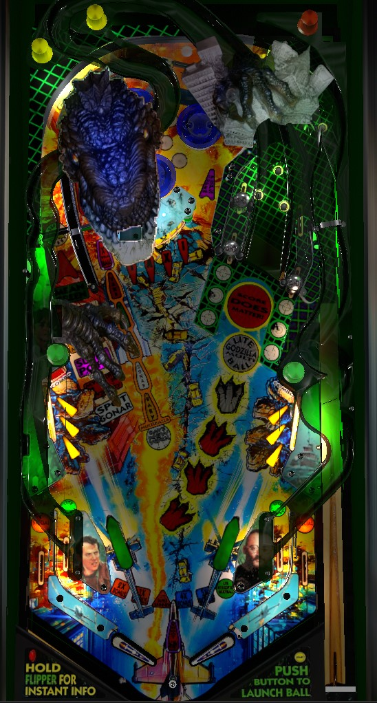

Not to be confused with Godzilla Pro/Premium/Limited Edition (Stern Pinball, 2021) or Godzilla 70th Anniversary (Stern Pinball, 2024), which are probably what you were searching for, but don't have pages on The Pinball Primer.
Every feature in the game gives progress toward starting one of the game's 5 main multiballs. All multiballs are started at the New York lane next to the left orbit. Don't start multiballs as soon as they're qualified, though; jackpots are higher the more multiballs you start at once. Qualify multiballs by shooting the left orbit and right ramp repeatedly, making 3 hits to each side of the captive ball, completing the center Taxi targets, and making in lane -> Combo target combos in the lower left and right. Multiballs can be started during other multiballs. More concurrent multiballs = more jackpots lit and higher jackpot values.
If the ball is plunged normally, a magnet will drop the ball into the bumpers, and it will come down the middle of the game towards the flippers. There is no skill shot in this case. If you hold the left flipper on the plunge, the ball will come down the left orbit toward the left flipper; if you shoot the right ramp basically immediately, you get 5,000,000 points. There isn't even really time to live/drop catch and line up a shot; you need to one-time the return feed from the orbit up the right ramp to make the skill shot. The skill shot isn't really worth the risk that comes from flailing away at a high speed pinball, but it is a legitimate strategy to hold the left flipper to start the skill shot and then just get the ball under control instead, since the feed out of the pop bumpers is somewhat liable to cause a center drain or require a slap save that would use up tilt warnings.
Taxi Multiball: hit flashing Taxi targets in the center of the playfield to light them. Light all 4 targets to spell Taxi and score 1,000,000 points. For the first Taxi Multiball, only one spelling of Taxi is needed. The second Taxi Multiball requires 2 spellings. I am not sure if qualifying Taxi Multiball ever gets harder than that.
Helicopter Multiball: a full shot to the left orbit when Super Pops is not running feeds the right in lane, and a full shot to the right ramp feeds the left in lane. When a ball rolls through an in lane, the red standup target labelled "Combo" on the opposite side will briefly flash. Hit this target while it's flashing to score a Helicopter Combo. There are 6 Helicopter Combo awards:
The end-of-ball bonus multiplier earned from this sequence stays intact until the corresponding Helicopter Multiball is played.
Godzilla Multiball: shoot the right ramp. 5 shots qualifies Godzilla Multiball. For the first Godzilla Multiball, ramp shot #1 is spotted for you, and it only takes 4 ramp shots instead. Ramp shots each score 1,000,000 more than the previous, maxing out at 5,000,000 for the shot that qualifies Godzilla Multiball. Shots to the right ramp come to the left in lane, except for the shot that qualifies Godzilla Multiball, which will be returned to the playfield through the mouth of the large Godzilla toy.
Shooting the right ramp once after qualifying Godzilla Multiball starts Score Does Matter, a combo round where every shot to the right ramp scores 5,000,000 points until you miss. When Score Does Matter times out, it takes 5 more ramp shots to restart it. Playing Godzilla Multiball resets the progress on Score Does Matter, since the game will prioritize counting down to having Godzilla Multiball lit again.
Sonar Multiball: the captive ball is a two-part U-shaped structure that curves under the right ramp. There is one captive ball on each side, and a third "back" captive ball behind the first two that gets knocked between the two sides. There are 3 Sonar inserts on the playfield in front of the first two captive balls; the side with the flashing Sonar insert has that extra back captive ball, so hit the front captive ball where the flashing light is to whack the back captive ball to the other side. Doing so lights that Sonar inserts solidly and scores the Sonar value, which starts at 200,000 points, increases by 100,000 each time, and doesn't seem to max out or reset over the course of the entire game. Lighting all 3 Sonar inserts on each side qualifies Sonar Multiball. Collecting the Spot Sonar award from the left orbit instantly awards credit for one Sonar hit on each side.
Baby Godzilla Multiball: shoot the left orbit a whole bunch. Each left orbit shot scores 50,000 points, plus the spinner value (10,000 per spin normally, or 50,000 per spin after 3 Helicopter Combos).
The orbit count resets when Baby Godzilla Multiball is started, so to get the extra ball, you need to intentionally shoot the left orbit 5 times after qualifying Baby Godzilla Multiball, but without starting it. Also, the entire orbit progression is reset once Mean Green is played and concludes, and you can re-collect the awards before playing Baby Godzilla Multiball: I don't think anything happens if you start Super Pops or Light Baby Godzilla Multiball more than once.
When one or more multiballs are ready, they can all be started at the New York lane next to the left orbit. A magnet will catch the ball and hold it still until the intro animations for all multiballs have played. The jackpot value for all multiballs is based on how many multiballs were originally started at once and how many multiballs were added to the original stack.
All multiballs start with 4 balls, no matter how many of them are initially stacked together. You can start multiballs that were not part of the original stack by completing their qualification requirements during multiball; doing so will restart multiball with a new ball saver and autoplunging balls until there are 4 on the playfield again. During multiball, the dot display gives priority to jackpot animations or to messages saying where jackpots are lit, so it's harder than usual to see how close you might be to adding another multiball. Starting another multiball while a multiball is running only requires qualifying it: you don't need to shoot the New York lane to formally start them.
In practice, it's always better to wait to start any multiball until more of them are qualified. Starting all 5 multiballs at once comes with a jackpot of 25,000,000, but starting 1 multiball and adding the other four while multiball is running means the maximum jackpot is 15,000,000 points. Regardless, though, it's always in your best interest to get as many multiballs going at once as possible. Whenever any multiball(s) is/are running, two magnets under the playfield turn on and off, affecting how the ball comes down the playfield.
Each flavor of multiball has its own jackpot shot. When more than one multiball is running at a time, all jackpot shots for all multiballs are available. The arrows pointing at the New York lane indicate multiball statuses: if a multiball is unlit, it has not been played; if a multiball is flashing, it has been qualified or is currently in progress; if a multiball is solidly lit, it has been played previously, but is not currently in progress.
All multiballs end when there is 1 ball left in play and ball saver is off. There is no restart provided for multiball, even if multiball ends without a single jackpot being scored.
When single ball play resumes and all 5 multiballs have been played, the New York lane will be lit for Save New York wizard mode. Save New York is yet another 4-ball multiball. The jackpot value in Save New York is equal to the highest jackpot value you had reached during any multiball since the start of the game (or since the last Save New York, if you're playing the wizard mode twice in one game). You receive the jackpot value once just for starting Save New York; any shot that scores a jackpot in any of the 5 main multiballs also scores a jackpot here and lights a letter in New York; after spelling New York, shoot the New York lane one more time to recollect the jackpot and end the mode. All balls will be allowed to drain and all multiballs will be unlit. The max possible score in Save New York is 9x 25,000,000 = 225,000,000 points. There is no time limit to Save New York, but you cannot score additional jackpots once New York is spelled without shooting the New York lane and ending the wizard mode.
I don't know if these have a name, but completing a lower left or lower right 3-bank of targets score an increasing award worth 2,000,000 the first time and an additional 1,000,000 each subsequent time over the course of the game. The maximum for this is at least 4,000,000 points.
Godzilla has a conventional in/out lane setup. In lanes light the opposite Combo target for a Helicopter Combo. Out lanes score moderate points (usually about 1,000,000) and can somehow be lit for Special, though I've never seen it (Special must be a very rare Mystery award).
There is a center peg between the flippers that can help save some center drains, especially those coming out of the pop bumper area.
End of ball bonus is calculated as 100,000 points per shot made on that ball to any feature that made progress toward qualifying any of the game's 5 multiballs, all multiplied by the bonus mutiplier. Bonus multiplier is increased to 2x, 3x, 4x, and 5x by the 1st, 2nd, 4th, and 5th Helicopter Combos. Bonus multiplier is carried over from ball to ball until a Helicopter Multiball is played, at which point it resets and can be built back up by additional Helicopter Combos that count toward a future Helicopter Multiball. Bonus has decent value if it has been multiplied, but is not typically meaningful if you haven't made any Helicopter Combos.
I am not sure how many points Specials or extra balls would be worth in a competition/novelty setting.